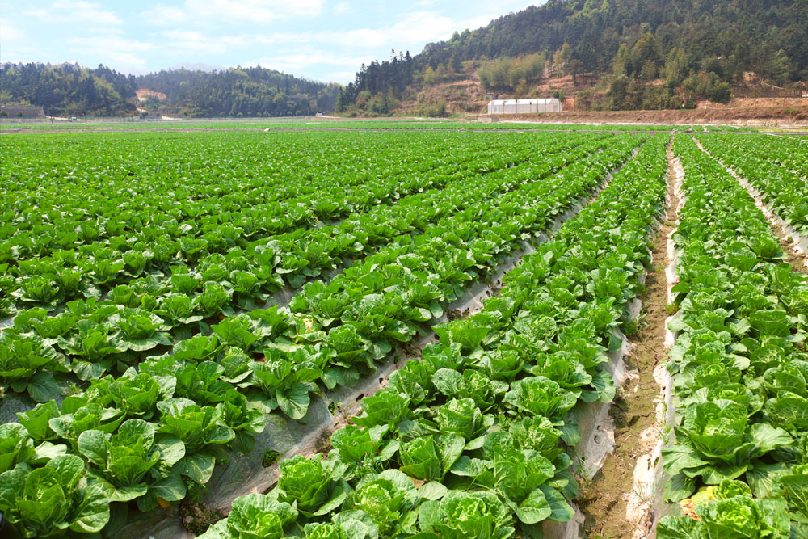

Welcome to the Organic Farmers Market Newcastle Eco Community (NEC) developed this website 'OFM' as way for organic farm businesses
to advertice their own online ordering and delivery system. The NEC partnered with
UON to develop this website by assigning a promising student with web communication skills. Many
smaller family farms sell produce directly from the farm.
Rolling Hills Estate
The Rolling Hills Estate is a family owned estate established in 1981 and is located 2.5 hour north of Sydney.
Rolling Hills Estate is one of Australia's biggest celery farms and only exports within Australia. Under the management of CEO
Kevin Hills, the farm operates 24 hours a day, 7 days a week with 500 employees working on and off-site.
Oak Farm is one of the newest farm in the watermelon industry, owned by Vic Rich. The farm was established 18 years ago and currently has a total of 900 employees that work onsite
to grow and export the watermelons across australia. The farm only exports within Australia at the moment, but intents to export internationally within the next couple of years.
OF is currently seen as a major contender in the watermelon export industry and is set to be the leading exporter of watermelons within the next 30 to 40 years.
For more information about watermelons: Watermelons
Moonshadow Lands

Moonshadow Lands is currently the only exporter in Australia that directly exports cabbages to the USA. Established in 2007 by owner
and CEO Ben Smith, who currently employees 10,000 staff members to grow, pack and export the cabbages directly to USA.
The farm is the one farm across the globe that exports fresh cabbages to the USA within 2 days and also holds the title of the 'The worlds
fastest produce of cabbages'.
Black Hawk Estate was founded and is currently owned by CEO Kyle Marsh, who established the farm in 1900. Kyle Marsh prides himself on
owning the one of the oldest Pumpkin procducing farms in Australia and employs a total of 60,000 staff. Although the company is one of Australia largest pumpkin producer, it only export
locally. CEO Kyle Marsh has stated several time to media that his farm only intends to export within Australia as it wants to produce jobs
across Australia for Australians job seekers.
Haywire Ranch is the only farm is Australia that export two goods (oranges and mangos). Established in 2005 by CEO Kevin Bacon who
currently has 100,000 member working for him. The farm orginally only exported within Australia, but the demand for oranges and mangos went down in 2008.
Ever since then the farm only exports internationally to USA only and has been doing so for the last 10 years.